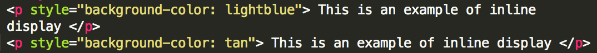
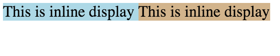
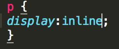
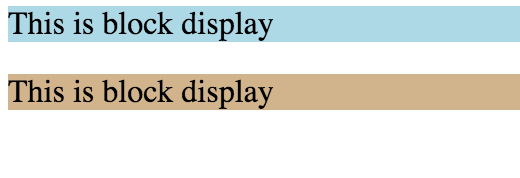
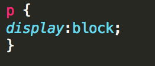
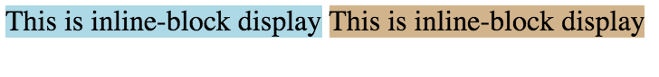
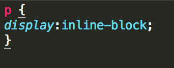

And so it begins. After mastering some basic HTML tags you begin typing (or copy/pasting) away at the keyboard and adding content to what will be the meat of the page. Your tags are set, your sections are beautiful, and your paragraphs are filling. HTML isn't so bad, you think, and you are just about ready to take a look at your creation on the browser, but you suddenly run into a problem. Your layout sucks. Your sections line up in a single column, images are overlapping important contet, and there's more space between your elements than between pre-teens at a middle school dance. How could this be, and how long will you be deleting and adding code before your site will look passible? At the very least, you can conquer your problems with the display property. In general, there are three different types to choose from: inline, block, and inline-block. Let's take a look at how the following HTML code changes when we change the CSS display property just a bit.
Inline is pretty easy to understand, and displays items just as the name implies. If you look at them example below, inline elements are displayed side-by-side in a row. The big thing to remember with *inline* is that your text objects will run together and appear as one paragraph. Accompanying code for this output in included below.
 Block display is a bit less intuitive, but just as easy to understand. Block will display the next item in a separate row. That is, the object will be displayed below the object that precedes it. Your objects will appear more as columns than rows. See below for an example.
 Inline-block display solves the problem you might encounter with text running together with an inline display. Instead of your text running together, each object will be displayed side by side in columns. This is probably the go-to option for those wanting a column appearance and a bit of separation between their inline objects. Notice the space between each section in the example below.
 As always, the best way to learn the difference between inline, block, and inline-block is to play with each type on your own. Experimenting with each type is as easy as changing a word on CSS, so you can the difference just by refreshing your browser. Hopefully you are a bit more comfortable with the display property and can direct your angst at some other layout property.